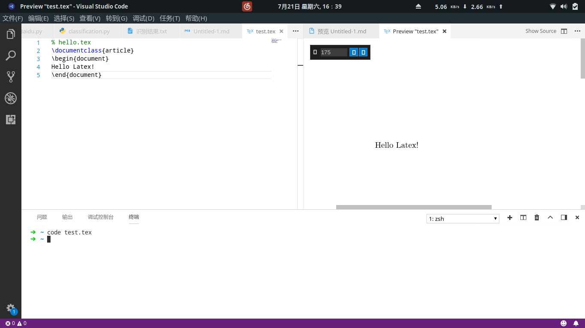
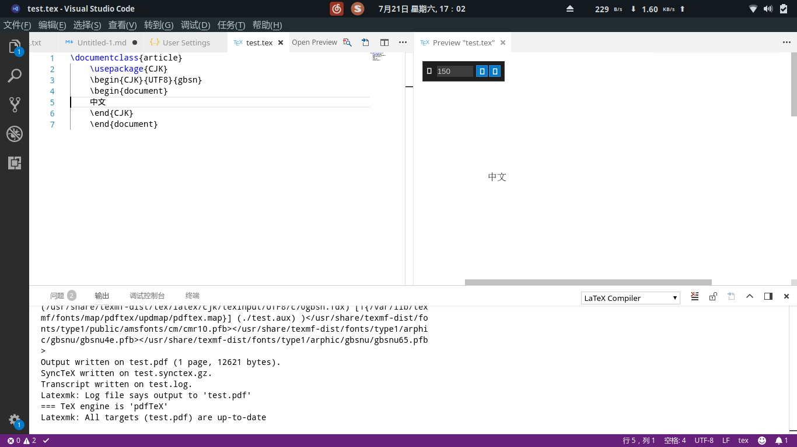
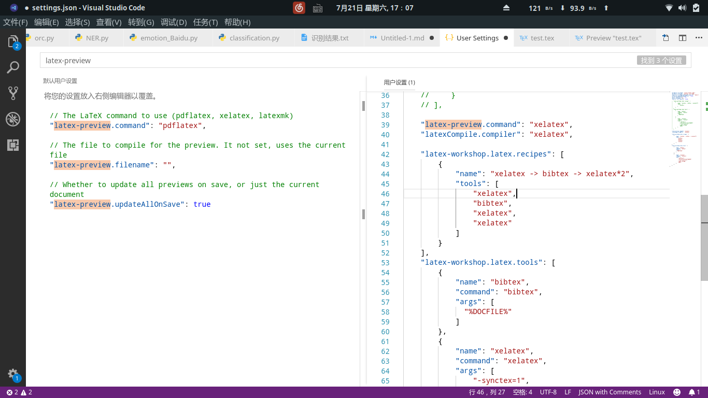
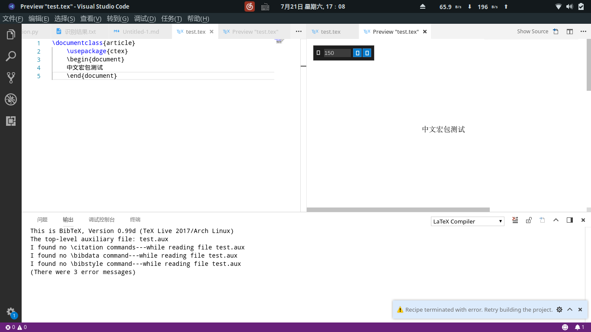

搭建LaTeX的工具是今年五月的时候要写专业英语的时候，那个时候只支持英文就行，所以对于包管理器很好的manjaro来说，pacman一下就ok了。
后来信安课程里面也需要写论文，然后重新又捣鼓了一下中文系统的支持。
【虽然我手上还有一堆论文还没有看orz…但是这个拖的实在是难受…】
环境介绍
我在Linux下用的是texlive+visual-studio-code+LaTeX workshop。因为vscode我用的比较多，装一个插件就可以用，比较轻量化。虽然我的LaTeX大佬建议我装texstudio，但是我觉得太冗余了。
另外说明，因为manjaro是在archlinux的基础上进行打包的，所以对于manjaro现在社区还不是很完善的情况下，如果有相关问题可以参考相关archlinux的解决方案。
安装texlive及其相关组件
单纯安装Latex是比较简单的，直接pacman就行了。
sudo pacman -S texlive-core texlive-bin texlive-langcjk texlive-latex3 texlive-latexextra
安装vscode和其插件
安装vscode也很简单
sudo pacman -S visual-studio-code-bin
在插件商店中安装Latex compile,Latex Preview,Latex Workshop,latex-formatter四个插件即可。
测试英文文档
如果没有什么中文或者其他的特殊需求，上面那几个包就足够了，安装完成之后记得重启一次机器。重启之后，Latex就可以用了，你可以编辑一个简单的tex文件来测试一下：
% hello.tex
\documentclass{article}
\begin{document}
Hello Latex!
\end{document}
然后直接ctrl+S保存就可以看预览了。

配置中文支持
目前Tex处理中文的解决方案我所了解主要有以下两种：
-
pdflatex + CJK
第一种应该是用的最广泛的，但是我用的模板里面有一些字体不支持，换成第二种就行。如果不用模板，写纯的tex的话现在也可以了。

如果用的是第一种方案，需要自己生成一些供Tex使用的中文字体，网上也有现成的字体可用，比如YueWang做的那个中文字体包。不过当我把YueWang的那个字体下载下来之后，发现这些字体在我的电脑上表现的不好，字体很虚而且字的周围会有杂色。没办法，只能自己动手编译字体了。
具体编译字体的过程可以自己找一下，因为我就是没有找到相关的文章，然后用了传统的编译文字的方法最后没有效果才转到了第二种方法Xetex上。这里有一篇是Ubuntu上的编译字体的文章（文中的脚本已经无效了）
还有一篇,可以作为参考
-
XeLaTex + ctex
XeLaTex可以直接使用系统的字体，也是比较好的选择。我用就是这种。
在vccode中默认选择用pdflatex对LaTeX进行编译。所以如果直接将第一种的那个tex代码的话会出错。需要对vscode进行设置修改。
具体如下：文件 -> 首选项 -> 设置
然后把这一段设置代码放在左侧进行覆盖即可。
"xelatex", 1
2
3
4
5
6
7
8
9
10
11
12
13
14
15
16
17
18
19
20
21
22
23
24
25
26
27
28
29
30
31
32
33"latexCompile.compiler": "xelatex",
"latex-workshop.latex.recipes": [
{
"name": "xelatex -> bibtex -> xelatex*2",
"tools": [
"xelatex",
"bibtex",
"xelatex",
"xelatex"
]
}
],
"latex-workshop.latex.tools": [
{
"name": "bibtex",
"command": "bibtex",
"args": [
"%DOCFILE%"
]
},
{
"name": "xelatex",
"command": "xelatex",
"args": [
"-synctex=1",
"-interaction=nonstopmode",
"-file-line-error",
"-shell-escape",
"%DOC%"
],
}
],设置完效果如图
保存以后就可以ctex包了。
如图在图上可以看到有几个警告，这是因为默认的Xelatex编译会自动使用文献编译bibtex，但是此处并没有文献。这个并不影响预览。关于这个的详细解释可以参考我的另外一篇关于这个的文章
相关资料
LaTeX 模板网站: http://www.latexstudio.net/
TeX Live (简体中文) - ArchWiki: https://wiki.archlinux.org/index.php/TeX_Live_(简体中文)#.E5.AE.89.E8.A3.85
LaTeX 实战经验：新手须知: https://blog.csdn.net/simple_the_best/article/details/51244631